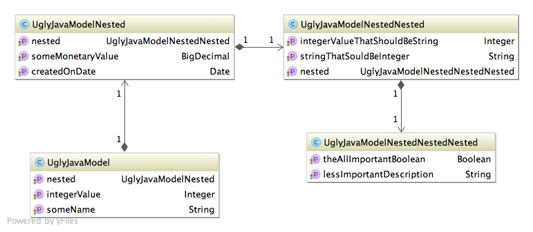

Making Java web-apps Groovy
Groovy for fun and pleasure.
by Franjo Žilić
Today
Groovy vs. Java
Spring with Groovy
Testing with Groovy
More testing with Groovy
Groovy is a dynamic language of JVM which adds features to well known Java syntax and JDK libraries inspired by languages like Python, Ruby, Smalltalk.
...
Makes Java code simpler and easier to read.
Interoperable with Java libraries.
Compiles into Java bytecode.
Let's you get more done by doing less.
Types are optional or checked.
Some differences
- default imports
- semicolons are optional
- return is optional
- == means .equals
- getters and setters appear on their own
- public by default
- truth is not what it was
- parentheses are optional * but we like them
Real time savers
- iteration methods
- operators
- null safe dereference - ?.
- elvis - ?:
- spread - *.
- regex - =~ ==~
- subscript - b[0]
Why Groovy in web app?
Thought before syntax.
Easy to learn *if we know Java
Less code - fewer errors.
Less code - more tests.
Why not Grails

Rewriting takes time.
Taking small steps.
Whole new ecosystem?
Being forced?
Integration
Ant
Maven
Gradle
Ant
Native groovyc integration
Supports any Groovy version
Uses stubs for joint (Java+Groovy) projects
... uses ant
Maven
GMavenPlus
Supports any Groovy version
Not a native maven-compiler plugin
Poor IDE integration (Eclipse)
Uses stubs...
Maven
Groovy Eclipse Compiler
Native maven-compiler-plugin
Good IDE integration (Eclipse, IntelliJ)
Restricts Groovy version
No support for invoke-dynamic
Gradle
Uses groovyc ant task, so applies as for ant
Decent IDE integration
Saving time in production code
Let's say we have a model
... we can't change it
... we get a list of UglyJavaModel objects
... anything can be null
Requirements
someone said:
- count with theAllImportantBoolean true
- top three sorted by someMonetaryValue descending
Java
Let's just count those they want
final List<UglyJavaModel> list = thirdPartyService.onlyWayToGetData();
int countOfThoseWithBooleanTrue = 0;
for (final UglyJavaModel uglyJavaModel : list) {
if (uglyJavaModel.getNested() != null
&& uglyJavaModel.getNested().getNested() != null
&& uglyJavaModel.getNested().getNested().getNested() != null
&& uglyJavaModel.getNested().getNested().getNested()
.getTheAllImportantBoolean() == true) {
countOfThoseWithBooleanTrue++;
}
}
model.addAttribute("countWithBooleanTrue", countOfThoseWithBooleanTrue);
Java can do better, but...
Java
And just top three
final List<UglyJavaModel> list = thirdPartyService.onlyWayToGetData();
list.sort(new Comparator<UglyJavaModel>() {
@Override
public int compare(final UglyJavaModel left, final UglyJavaModel right) {
return left.getNested().getSomeMonetaryValue()
.compareTo(right.getNested().getSomeMonetaryValue()) * -1;
}
});
final List<String> topThree = new ArrayList<String>(3);
for (final UglyJavaModel uglyJavaModel : list.subList(0, 3)) {
topThree.add(uglyJavaModel.getSomeName());
}
model.addAttribute("topThree", topThree);
Groovy
I know, this is boring
def list = thirdPartyService.onlyWayToGetData()
model.addAttribute("countWithBooleanTrue", list.count {
it?.nested?.nested?.nested?.theAllImportantBoolean
})
model.addAttribute("topThree", list.sort {
a, b ->
b.nested.someMonetaryValue <=> a.nested.someMonetaryValue
}[0..2]*.someName)
Testing
JUnit is good enough
... but we still have to write a lot of code
... and we need a lot of libraries
Why Groovy
simpler asserts
dynamic groovy
less code
Classic JUnit4 test
@RunWith(MockitoJUnitRunner.class) //omitted imports - Mockito, Assertions
public class TipicalJunitTest {
@Test //ommited mocks and prepare data
public void testUglyJavaControllerReturingCorrectCount() {
final UglyJavaController controller = new UglyJavaController(service);
final ArrayList<UglyJavaModel> uglyJavaModels = prepareData();
when(service.onlyWayToGetData()).thenReturn(uglyJavaModels);
final String view = controller.showSomething(model);
assertThat(view).isEqualTo("ugly");
verify(model).addAttribute(eq("countWithBooleanTrue"), eq(1));
verify(model).addAttribute(eq("topThree"), captor.capture());
verify(service).onlyWayToGetData();
verifyNoMoreInteractions(service, model);
assertThat(captor.getValue()).containsExactly("first","third","second");
}
}
Same test, Groovy Way
class GroovyJunitTest {
def data = [/* prepare data*/] // use mocks if you want
@Test
void testUglyJavaControllerReturingCorrectCount() {
def controller = new UglyJavaController([onlyWayToGetData: {
return data }] as ThirdPartyService)
assert controller.showSomething([addAttribute: { String attr, value ->
if (attr == 'countWithBooleanTrue') {
assert value == 1
} else if (attr == 'topThree') {
assert value == ['first', 'third', 'second']
} else {
assert false
}
}] as Model) == 'ugly'
}
}
Data driven tests
... the dreaded Parameterized runner
What about data driven with Spring context?
No out of the box solution.
Welcome Spock
... an expressive testing and specification framework
brings new meaning to data driven
Written in Groovy, inspired by others*, compatible with JUnit
*JUnit, jMock, Mockito, RSpec...
@ContextConfiguration(['classpath:spring/test-config.xml'])
class SneakPeekSpockSpecification extends Specification {
@Autowired
SimpleSpringService service
@Unroll
void "just a simple sneak peak for spock"() {
given:
def testService = new SpockDemoService(service)
expect: "dependencies are met"
service
when: "calculate average for #booleanValue #givenValues.inspect()"
def average = testService.averageValueFor(booleanValue, givenValues.collect {
return new UglyJavaModel(nested:
new UglyJavaModelNested(someMonetaryValue: it.d, nested:
new UglyJavaModelNestedNested(nested:
new UglyJavaModelNestedNestedNested(theAllImportantBoolean: it.b))))
})
then: "average value should be #expected"
average == expected
where:
booleanValue|givenValues || expected
true |[[b:true,d:42.98],[b:false,d:4.3],[b:true,d:27.31]]||35.14
false |[[b:true,d:42.98],[b:false,d:4.3],[b:true,d:27.31]]||4.3
true |[[b:true,d:42.98],[b:true,d:4.3],[b:true,d:27.31]] ||24.86
}
}
https://github.com/fzilic/making-java-groovy